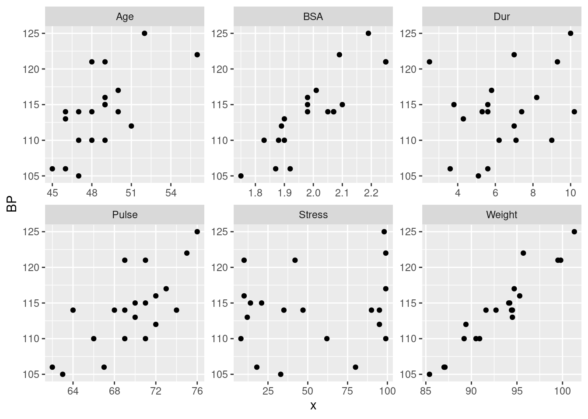
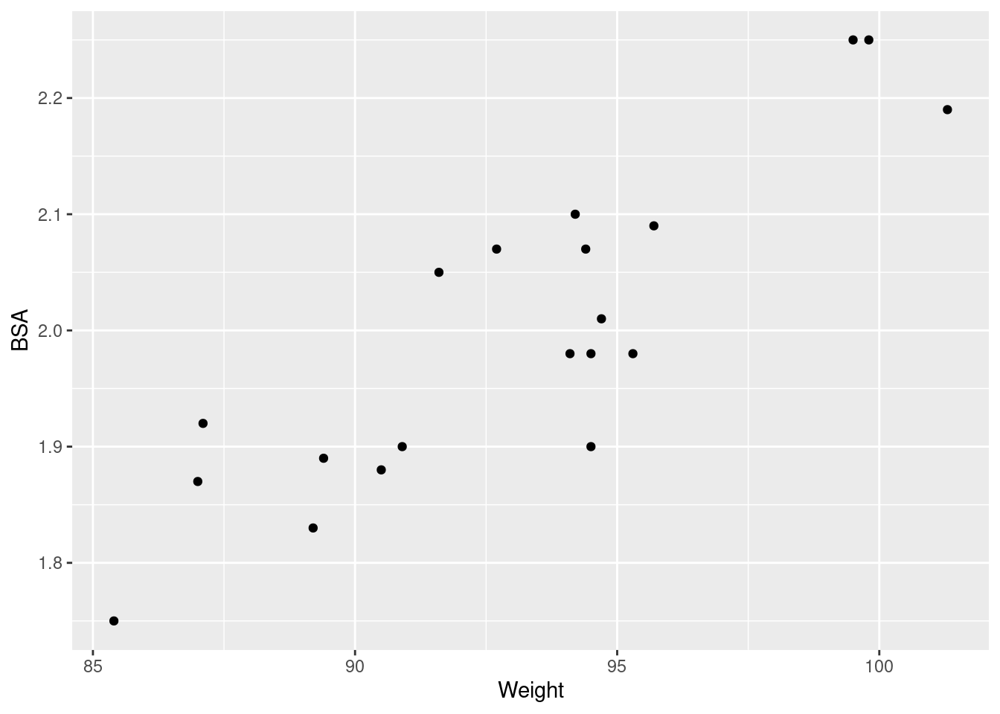
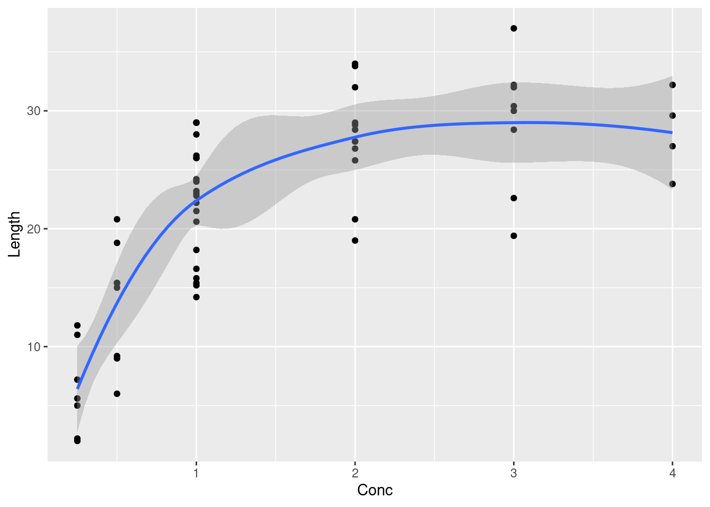
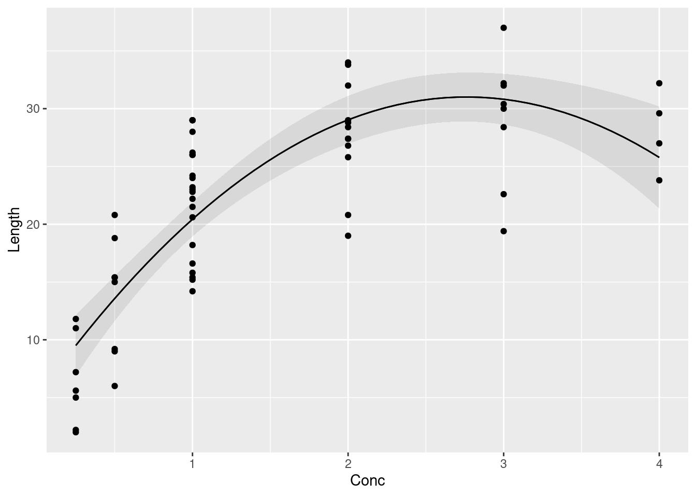

library(tidyverse)26 Regression revisited
26.1 Veggie burgers
You like hamburgers, but you are a vegetarian. What to do? Today, there are many brands of hamburgers without any meat in them. Some of these are designed to taste like meat, and some have their own flavour. A magazine rated the flavour and texture of 12 different (numbered) brands of meatless hamburgers (to give a rating score between 0 and 100), along with the price (in cents), the number of calories, the grams of fat, and the milligrams of sodium. These measurements are per burger. Is it possible to predict the rating score of a brand of meatless hamburger from the other measurements, and if so, how? The data are in http://ritsokiguess.site/datafiles/veggie-burgers.txt, in aligned columns.
Read in and display (most of) the data.
Fit a suitable regression to predict score from the other measured variables. Display the results.
It looks as if both
priceandsodiumwill be able to be removed from this regression. Do so, explain briefly why another test is necessary, and do that other test. What do you conclude? (Note: if you display your output to the second regression, something rather odd will appear. You can safely ignore that.)Another veggie burger (not in the original dataset) has the following values for the explanatory variables: price 91, calories 140, fat 5, sodium 450. What can you say about the likely score for a veggie burger with these values? Obtain a suitable interval, for each of your two models.
Compare the lengths of your two intervals. Does it make sense that your shorter one should be shorter? Explain briefly.
Using our second model (the one with only
caloriesandfatin it), find a suitable interval for the mean score when (i) calories is 140 and fat is 5, (ii) calories is 120 and fat is 3. (You should have two intervals.)Explain briefly why the second interval is shorter than the first one. Make sure you justify your answer.
26.2 Blood pressure
Twenty people with high blood pressure had various other measurements taken. The aim was to see which of these were associated with blood pressure, with the aim of understanding what causes high blood pressure. The variables observed were:
Pt: patient number (ignore)BP: (diastolic) blood pressure, in mmHgAgein yearsWeightin kgBSA: body surface area, in m\(^2\)Dur: length of time since diagnosis of high blood pressure, in yearsPulse: pulse rate, in beats per minuteStress: score on a questionnaire about stress levels (higher score is more stressed)
The data values, separated by tabs, are in https://ritsokiguess.site/datafiles/bloodpress.txt.
Read in and display (some of) the data.
Make a plot of the blood pressure against each of the measured explanatory variables. Hint: use the idea from C32 of making a suitable long dataframe and using facets in your graph.
Which explanatory variables seem to have a moderate or strong linear relationship with blood pressure?
Run a regression predicting blood pressure from
BSAandWeight, and display the output. Does the significance or lack of significance of each of your explanatory variables surprise you? Explain briefly.Explain briefly why it does in fact make sense that the regression results came out as they did. You may wish to draw another graph to support your explanation.
26.3 Contraction of heart muscle
An experiment was carried out on heart muscle in rats. The original description of the experiment was as follows:
The purpose of this experiment was to assess the influence of calcium in solution on the contraction of heart muscle in rats. The left auricle of 21 rat hearts was isolated and on several occasions a constant-length strip of tissue was electrically stimulated and dipped into various concentrations of calcium chloride solution, after which the shortening of the strip was accurately measured as the response.
The data are in http://ritsokiguess.site/datafiles/regression2_muscle.csv. There are three columns:
Strip: a label for the strip of tissue treated with calcium chloride (text, ignored by us)Conc: the concentration of calcium chloride, in suitable unitsLength: the change in length (shortening) of the strip of tissue, mm.
There are actually 60 measurements, so some of them came from the same rat, a fact that we ignore in this question.
Read in and display (some of) the data.
Make a suitable graph of the two quantitative variables, with a smooth trend.
Why does your plot suggest that a regression with a squared term would be useful? Fit a suitable regression, and display the results.
How do you know that adding the squared term was a good idea (or, was not a good idea, depending how your output came out)?
For concentrations of 2, 3, and 4 units, obtain 95% confidence intervals for the mean
Length. Display only the relevant columns of your result, and save it.Work out the length of each of your confidence intervals. Does it make sense that the lengths compare as they do? Explain briefly.
Suppose you have some new rat tissues, not part of the original dataset, and run the same experiment on these with concentrations 2, 3, and 4 units. What are 95% intervals for the predicted
Lengths that you will observe for these tissues? Display your intervals next to the concentrations they are predictions for.
My solutions follow:
26.4 Veggie burgers
You like hamburgers, but you are a vegetarian. What to do? Today, there are many brands of hamburgers without any meat in them. Some of these are designed to taste like meat, and some have their own flavour. A magazine rated the flavour and texture of 12 different (numbered) brands of meatless hamburgers (to give a rating score between 0 and 100), along with the price (in cents), the number of calories, the grams of fat, and the milligrams of sodium. These measurements are per burger. Is it possible to predict the rating score of a brand of meatless hamburger from the other measurements, and if so, how? The data are in http://ritsokiguess.site/datafiles/veggie-burgers.txt, in aligned columns.
- Read in and display (most of) the data.
Solution
Aligned columns says read_table:
my_url <- "http://ritsokiguess.site/datafiles/veggie-burgers.txt"
burgers <- read_table(my_url)
── Column specification ────────────────────────────────────────────────────────
cols(
brand = col_double(),
score = col_double(),
price = col_double(),
calories = col_double(),
fat = col_double(),
sodium = col_double()
)burgersThere are 12 rows, one per brand, and the columns are as promised (and all quantitative, except for brand, which is an identifier).
\(\blacksquare\)
- Fit a suitable regression to predict score from the other measured variables. Display the results.
Solution
The brand is an identifier, so skip that:
burgers.1 <- lm(score ~ price + calories + fat + sodium, data = burgers)
summary(burgers.1)
Call:
lm(formula = score ~ price + calories + fat + sodium, data = burgers)
Residuals:
Min 1Q Median 3Q Max
-19.376 -5.358 1.843 7.027 13.454
Coefficients:
Estimate Std. Error t value Pr(>|t|)
(Intercept) 59.84879 35.67526 1.678 0.1373
price 0.12868 0.33907 0.380 0.7156
calories -0.58048 0.28876 -2.010 0.0843 .
fat 8.49825 3.47215 2.448 0.0443 *
sodium 0.04876 0.04062 1.200 0.2690
---
Signif. codes: 0 '***' 0.001 '**' 0.01 '*' 0.05 '.' 0.1 ' ' 1
Residual standard error: 12.72 on 7 degrees of freedom
Multiple R-squared: 0.4991, Adjusted R-squared: 0.2128
F-statistic: 1.744 on 4 and 7 DF, p-value: 0.2443My numbering scheme for models is based on the name of the dataframe. Base yours on the response variable score if you prefer. But have a scheme, since there is going to be more than one model in this question.
\(\blacksquare\)
- It looks as if both
priceandsodiumwill be able to be removed from this regression. Do so, explain briefly why another test is necessary, and do that other test. What do you conclude? (Note: if you display your output to the second regression, something rather odd will appear. You can safely ignore that.)
Solution
There are several things to keep straight. The first thing is to fit a model without price and sodium. The easiest way to do this is to copy, paste and edit:
burgers.2 <- lm(score ~ calories + fat, data = burgers)
summary(burgers.2)
Call:
lm(formula = score ~ calories + fat, data = burgers)
Residuals:
Min 1Q Median 3Q Max
-17.919 -6.786 -4.352 11.198 16.786
Coefficients:
Estimate Std. Error t value Pr(>|t|)
(Intercept) 75.5907 24.4377 3.093 0.0129 *
calories -0.4600 0.2701 -1.703 0.1227
fat 7.7047 3.3703 2.286 0.0481 *
---
Signif. codes: 0 '***' 0.001 '**' 0.01 '*' 0.05 '.' 0.1 ' ' 1
Residual standard error: 12.56 on 9 degrees of freedom
Multiple R-squared: 0.3725, Adjusted R-squared: 0.233
F-statistic: 2.671 on 2 and 9 DF, p-value: 0.1228Aside: the odd thing is that calories is no longer significant. This is confusing, because usually what happens is that explanatory variables become more significant when other non-significant variables are removed. So now you may be thinking that calories should be removed as well. But see the Extra for what happens when you do that. This is why I said to ignore the odd thing. End of aside.
However, we removed two explanatory variables at once. This is not supported by the \(t\)-tests in the output from burgers.1, because they only say what will happen if we remove one \(x\)-variable. Hence, we need a test that says whether removing those two \(x\)s at once was reasonable. That is this test:
anova(burgers.2, burgers.1, test = "F")(That is F in quotes, saying to do an \(F\)-test, not that anything is FALSE.)
With a P-value of 0.45, this is saying that there is no significant difference in fit between the two models, and so we should prefer the smaller, simpler one burgers.2, with just calories and fat in it, because it fits just as well as the bigger, more complicated one (and therefore we do not need the extra complication).
Extra: What happens if you do backward elimination from here, starting from the best model found so far?
The previous part told us that predicting score from just calories and fat was the best thing to do so far. That was the model I called burgers.2:
summary(burgers.2)
Call:
lm(formula = score ~ calories + fat, data = burgers)
Residuals:
Min 1Q Median 3Q Max
-17.919 -6.786 -4.352 11.198 16.786
Coefficients:
Estimate Std. Error t value Pr(>|t|)
(Intercept) 75.5907 24.4377 3.093 0.0129 *
calories -0.4600 0.2701 -1.703 0.1227
fat 7.7047 3.3703 2.286 0.0481 *
---
Signif. codes: 0 '***' 0.001 '**' 0.01 '*' 0.05 '.' 0.1 ' ' 1
Residual standard error: 12.56 on 9 degrees of freedom
Multiple R-squared: 0.3725, Adjusted R-squared: 0.233
F-statistic: 2.671 on 2 and 9 DF, p-value: 0.1228Evidently, calories comes out now:
burgers.3 <- lm(score ~ fat, data = burgers)
summary(burgers.3)
Call:
lm(formula = score ~ fat, data = burgers)
Residuals:
Min 1Q Median 3Q Max
-17.186 -8.538 -2.136 5.898 22.814
Coefficients:
Estimate Std. Error t value Pr(>|t|)
(Intercept) 35.390 6.906 5.124 0.000448 ***
fat 2.949 2.059 1.432 0.182578
---
Signif. codes: 0 '***' 0.001 '**' 0.01 '*' 0.05 '.' 0.1 ' ' 1
Residual standard error: 13.7 on 10 degrees of freedom
Multiple R-squared: 0.1702, Adjusted R-squared: 0.08724
F-statistic: 2.051 on 1 and 10 DF, p-value: 0.1826Now, there is only one explanatory variable left, and it is no longer significant, so it too has to come out now! This seems to make no sense, since fat was definitely significant before, and we would expect it still to be significant after removing something that was not significant. (Sometimes this happens; this is one of those cases.)
Another way of expressing your surprise is to look at the R-squared values (or the adjusted R-squared values) for the models we have fit so far:
| Model | Explanatory | R-squared | Adj R-sq |
|---|---|---|---|
| 1 | price + calories + fat + sodium |
0.50 | 0.21 |
| 2 | calories + fat |
0.37 | 0.23 |
| 3 | fat |
0.17 | 0.09 |
As we go through the models, R-squared goes dramatically down (it will go down because it always goes down when you take things out, but this seems too dramatic). Adjusted R-squared goes up when we take out price and sodium, but it too goes sharply down when we take out calories, which doesn’t seem right.
There is no need to go any further than this, but if you want to take out fat as well, leaving you with no explanatory variables at all, there are a couple of non-obvious ways to do it. One is to use update:
burgers.4 <- update(burgers.3, . ~ . -fat)
summary(burgers.4)
Call:
lm(formula = score ~ 1, data = burgers)
Residuals:
Min 1Q Median 3Q Max
-17.50 -10.50 -3.00 4.25 26.50
Coefficients:
Estimate Std. Error t value Pr(>|t|)
(Intercept) 43.500 4.139 10.51 4.49e-07 ***
---
Signif. codes: 0 '***' 0.001 '**' 0.01 '*' 0.05 '.' 0.1 ' ' 1
Residual standard error: 14.34 on 11 degrees of freedomThis says that the predicted score is 43.5, regardless of the values of anything else! There is no R-squared displayed, because that is zero for a model with no \(x\)-variables.
The other way is to find out that R understands 1 to mean a model with just an intercept:
burgers.4a <- lm(score ~ 1, data = burgers)
summary(burgers.4a)
Call:
lm(formula = score ~ 1, data = burgers)
Residuals:
Min 1Q Median 3Q Max
-17.50 -10.50 -3.00 4.25 26.50
Coefficients:
Estimate Std. Error t value Pr(>|t|)
(Intercept) 43.500 4.139 10.51 4.49e-07 ***
---
Signif. codes: 0 '***' 0.001 '**' 0.01 '*' 0.05 '.' 0.1 ' ' 1
Residual standard error: 14.34 on 11 degrees of freedomOnce again, the R-squared is zero.
\(\blacksquare\)
- Another veggie burger (not in the original dataset) has the following values for the explanatory variables: price 91, calories 140, fat 5, sodium 450. What can you say about the likely score for a veggie burger with these values? Obtain a suitable interval, for each of your two models.
Solution
This is talking about the predicted response for an individual (this burger), not the mean response for all veggie burgers with those values for the explanatory variables, so it calls for a prediction interval in each case. This is the one that uses predict, not the one that uses the marginaleffects package (the one we did second in lecture).
The first step is to make a dataframe, by my tradition called new, of values to predict for. Any way that produces you a one-row dataframe is good, for example:
new <- tribble(
~price, ~calories, ~fat, ~sodium,
91, 140, 5, 450)
newIf you are stuck, type the values into a file (or even a spreadsheet) and read that in. But find a way.
For the model with all four explanatory variables:
predict(burgers.1, new, interval = "p") fit lwr upr
1 54.72593 20.13798 89.31389and for the model with only two:
predict(burgers.2, new, interval = "p") fit lwr upr
1 49.71981 18.63013 80.80949These intervals are distressingly wide, as is usually the way with prediction intervals (and we only have 12 observations to base the interval on). Also, it didn’t matter that in the second case, new had some extra columns in it; these were just ignored.
Extra: these values are one SD above the mean in each case. How did I work them out? Like this:
burgers %>%
summarize(across(price:sodium, list(mean = \(x) mean(x), sd = \(x) sd(x)))) %>%
pivot_longer(everything(), names_to = c("variable", ".value"), names_sep = "_")To work out summary statistics for a whole bunch of columns, use across inside the summarize. First is the columns you want to summarize, and then is how you want to summarize them. In this case, I wanted the mean and SD of each variable, two things, so I had to put them in a list. Something possibly new here is that I “named” the elements of the list (the mean = and sd =); what this does is to add mean and sd onto the name of each variable, so that I can tell which variable and which statistic I am looking at:
burgers %>%
summarize(across(price:sodium, list(mean = ~mean(.), sd = ~sd(.)))) This is all right, but I was hoping for something tidier. How about the names of the variables in the rows, and the names of the statistics in the columns? This is evidently some kind of pivot_longer. It’s one of the fancy ones where the column names we have here encode two things, separated by an underscore. That means having two things in names_to, and also having a names_sep that says what those two things are separated by (an underscore).
To get the variable names in rows, we need to create a new column called something like variable. This is the usual kind of pivot_longer thing: put that first in names_to, because the things that are going in variable are the first part of the column names we have here. The second part of the column names we have so far, mean or sd, are going to make names of new columns, which is different from what would normally happen, which is this:
burgers %>%
summarize(across(price:sodium, list(mean = ~mean(.), sd = ~sd(.)))) %>%
pivot_longer(everything(), names_to = c("variable", "stat"), names_sep = "_", values_to = "value")This has created a column called stat, with the names of the statistics in it. This is all right, but is not as tidy as we1 would like.
To use the things in stat as column names (and to fill the columns with the thing currently in value), what you do is to replace the appropriate thing in names_to with the special label .value. When you do this, you can take out the values_to, since pivot_longer now knows where the values are going (into the new columns you are creating):
burgers %>%
summarize(across(price:sodium, list(mean = \(x) mean(x), sd = \(x) sd(x)))) %>%
pivot_longer(everything(), names_to = c("variable", ".value"), names_sep = "_")Isn’t that pretty?
\(\blacksquare\)
- Compare the lengths of your two intervals. Does it make sense that your shorter one should be shorter? Explain briefly.
Solution
After my long Extra, I need to display them again so that I can see them:
predict(burgers.1, new, interval = "p") fit lwr upr
1 54.72593 20.13798 89.31389predict(burgers.2, new, interval = "p") fit lwr upr
1 49.71981 18.63013 80.80949The first interval is about 69 points long and the second one is about 62 points long. Therefore the second interval is shorter.
Why is that? This is different from the other interval comparisons we have done, because this time we are comparing the same prediction from two different models.
Our previous work showed that the model burgers.2 was better than burgers.1. This was because it had fewer explanatory variables in it, and we showed that the ones we removed from burgers.1 could safely be removed (the \(F\)-test in anova). Or similar wording; you might have concluded that the extra explanatory variables in burgers.1 were not needed and could be taken out.
This is another reason for trying to find a good model: not only is a smaller model easier to explain, but it also gives better predictions, in the sense that the uncertainty around the prediction (as measured by the length of the interval) is smaller.
\(\blacksquare\)
- Using our second model (the one with only
caloriesandfatin it), find a suitable interval for the mean score when (i) calories is 140 and fat is 5, (ii) calories is 120 and fat is 3. (You should have two intervals.)
Solution
This is the “mean of all possible scores” when the explanatory variables take the values shown, so it’s the confidence interval for the mean response rather than the prediction interval we had before. To start, make another new with the two rows of values in it:
new <- tribble(
~calories, ~fat,
140, 1,
120, 3
)
newCheck. Then, predictions (from the marginaleffects package, which of course you remembered to install (once) and load first):
library(marginaleffects)
cbind(predictions(burgers.2, newdata = new)) %>%
select(calories, fat, estimate, conf.low, conf.high)(if you use the wrong model, you’ll get an error, because the bigger model has some other things in it that we don’t have values for.)
\(\blacksquare\)
- Explain briefly why the second interval is shorter than the first one. Make sure you justify your answer.
Solution
First, verify that the second interval really is shorter than the first one. (If, for some reason, it is not, then say that.) The first interval is of length about \(62-37 = 25\), and the second one is of length about \(52-35 = 17\).
Aside: you might be thinking about working those out with R rather than by hand, and so you can:
cbind(predictions(burgers.2, newdata = new)) %>%
mutate(ci_length = conf.high - conf.low) %>%
select(calories, fat, conf.low, conf.high, ci_length)Now we are in the familiar situation where we are comparing predictions for different values for the same model. So you might be suspecting that the second pair of values is closer to the mean (for the data as a whole) than the first pair is.2 But we should check that this is indeed the case.
Let’s look at the values we predicted for first:
newTo get the means, the easiest way is summary, on the whole dataframe or the bit of it containing only calories and fat:
burgers %>%
select(c(calories, fat)) %>%
summary() calories fat
Min. : 80.0 Min. :0.00
1st Qu.: 97.5 1st Qu.:1.00
Median :115.0 Median :3.00
Mean :115.8 Mean :2.75
3rd Qu.:130.0 3rd Qu.:4.00
Max. :170.0 Max. :6.00 The values for both variables are both above their means, but the second values for both calories and fat are closer to their means.
There is a tidyverse way to do this, which uses across again, but it’s a bit simpler than the other one I did (in an Extra above):
burgers %>%
summarize(across(c(calories, fat), \(x) mean(x)))(“for each of calories and fat, work out the mean of it”). Another way to do the same thing is the map idea for running functions over each of something. mean returns a decimal number, so map_dbl:
burgers %>%
select(calories, fat) %>%
map_dbl(\(x) mean(x))calories fat
115.8333 2.7500 The map, by default, works on each column of the dataframe it is fed,3 namely the dataframe with only calories and fat in it.4
Somehow, make the assertion that the second values for calories and fat are closer to their means than the first values of each of them, and then demonstrate that this is indeed true. Or, think to yourself “this probably depends on the means somehow”, find the means, and then say that the second values are closer to the means, so the prediction for them should be better (in the sense of having a shorter confidence interval).
\(\blacksquare\)
26.5 Blood pressure
Twenty people with high blood pressure had various other measurements taken. The aim was to see which of these were associated with blood pressure, with the aim of understanding what causes high blood pressure. The variables observed were:
Pt: patient number (ignore)BP: (diastolic) blood pressure, in mmHgAgein yearsWeightin kgBSA: body surface area, in m\(^2\)Dur: length of time since diagnosis of high blood pressure, in yearsPulse: pulse rate, in beats per minuteStress: score on a questionnaire about stress levels (higher score is more stressed)
The data values, separated by tabs, are in https://ritsokiguess.site/datafiles/bloodpress.txt.
- Read in and display (some of) the data.
Solution
The data values are separated by tabs, so read_tsv is what you need:
my_url <- "https://ritsokiguess.site/datafiles/bloodpress.txt"
bp <- read_tsv(my_url)Rows: 20 Columns: 8
── Column specification ────────────────────────────────────────────────────────
Delimiter: "\t"
dbl (8): Pt, BP, Age, Weight, BSA, Dur, Pulse, Stress
ℹ Use `spec()` to retrieve the full column specification for this data.
ℹ Specify the column types or set `show_col_types = FALSE` to quiet this message.bp20 patients, and all the columns as listed. Remember that in R, uppercase and lowercase are different, so there is no problem in using (lowercase) bp for the name of a dataframe that has a column called (uppercase) BP in it. But if that confuses you, feel free to give your dataframe a more descriptive name like blood_pressure or even something like health_stats.
Extra: you can also use read_delim for this, but you have to do it right. If you do it as read_delim(my_url, " ") or similar, it won’t work, because the data values are not separated by single spaces:
bpxx <- read_delim(my_url, " ")Rows: 20 Columns: 1
── Column specification ────────────────────────────────────────────────────────
Delimiter: " "
chr (1): Pt BP Age Weight BSA Dur Pulse Stress
ℹ Use `spec()` to retrieve the full column specification for this data.
ℹ Specify the column types or set `show_col_types = FALSE` to quiet this message.bpxxAll of the data values have been smooshed together into a single column with a rather amusing name. The rather odd \t is the key to understanding what has happened. The simplest way to make it work is to use read_delim, but without saying what the delimiter character is:
bpx <- read_delim(my_url)Rows: 20 Columns: 8
── Column specification ────────────────────────────────────────────────────────
Delimiter: "\t"
dbl (8): Pt, BP, Age, Weight, BSA, Dur, Pulse, Stress
ℹ Use `spec()` to retrieve the full column specification for this data.
ℹ Specify the column types or set `show_col_types = FALSE` to quiet this message.bpxIf you look at the R Console now, you’ll see a line in the file-reading message that says
Delimiter: "\t"What happened is that read_delim successfully guessed what was separating the data values, by looking at the first few lines of the data file and seeing that there were a lot of tabs apparently separating data values. This behaviour is new in the latest version of readr;5 if you use this idea, you should be able to explain why it worked. If you cannot, it looks like a lucky guess.
By this point, you might have guessed that the mysterious \t is the way R represents a tab (you would be right), and that therefore you should be able to do this:6
bpxxxx <- read_delim(my_url, "\t")Rows: 20 Columns: 8
── Column specification ────────────────────────────────────────────────────────
Delimiter: "\t"
dbl (8): Pt, BP, Age, Weight, BSA, Dur, Pulse, Stress
ℹ Use `spec()` to retrieve the full column specification for this data.
ℹ Specify the column types or set `show_col_types = FALSE` to quiet this message.bpxxxxand you would once again be right.
\(\blacksquare\)
- Make a plot of the blood pressure against each of the measured explanatory variables. Hint: use the idea from C32 of making a suitable long dataframe and using facets in your graph.
Solution
Use pivot_longer with all the columns containing \(x\)-variables:
bp %>%
pivot_longer(Age:Stress, names_to = "xname", values_to = "x")and then plot BP against x facetting by xname:
bp %>%
pivot_longer(Age:Stress, names_to = "xname", values_to = "x") %>%
ggplot(aes(x = x, y = BP)) + geom_point() +
facet_wrap(~xname, scales = "free")
Use scales = "free" to have each scatterplot fill its facet.
If you don’t get to this, you are faced with making six scatterplots one by one, which will be a lot of work in comparison (and it’s easy to mess up the copy/paste and miss one of them out).
\(\blacksquare\)
- Which explanatory variables seem to have a moderate or strong linear relationship with blood pressure?
Solution
I would say BSA, Weight and maybe Pulse. For me, the Age relationship is not quite strong enough, and there is basically no relationship with Dur or Stress.
I don’t mind precisely where you draw the line. You could include Pulse and Age or not, but I think you should definitely include BSA and Weight and definitely exclude Dur and Stress.
Extra: Stress is often considered to be a cause of high blood pressure, but it seems from this dataset that it is not.
\(\blacksquare\)
- Run a regression predicting blood pressure from
BSAandWeight, and display the output. Does the significance or lack of significance of each of your explanatory variables surprise you? Explain briefly.
Solution
bp.1 <- lm(BP ~ BSA + Weight, data = bp)
summary(bp.1)
Call:
lm(formula = BP ~ BSA + Weight, data = bp)
Residuals:
Min 1Q Median 3Q Max
-1.8932 -1.1961 -0.4061 1.0764 4.7524
Coefficients:
Estimate Std. Error t value Pr(>|t|)
(Intercept) 5.6534 9.3925 0.602 0.555
BSA 5.8313 6.0627 0.962 0.350
Weight 1.0387 0.1927 5.392 4.87e-05 ***
---
Signif. codes: 0 '***' 0.001 '**' 0.01 '*' 0.05 '.' 0.1 ' ' 1
Residual standard error: 1.744 on 17 degrees of freedom
Multiple R-squared: 0.9077, Adjusted R-squared: 0.8968
F-statistic: 83.54 on 2 and 17 DF, p-value: 1.607e-09suppose we (foolishly) took out weight
bp.2 <- lm(BP ~ BSA, data = bp)
summary(bp.2)
Call:
lm(formula = BP ~ BSA, data = bp)
Residuals:
Min 1Q Median 3Q Max
-5.314 -1.963 -0.197 1.934 4.831
Coefficients:
Estimate Std. Error t value Pr(>|t|)
(Intercept) 45.183 9.392 4.811 0.00014 ***
BSA 34.443 4.690 7.343 8.11e-07 ***
---
Signif. codes: 0 '***' 0.001 '**' 0.01 '*' 0.05 '.' 0.1 ' ' 1
Residual standard error: 2.79 on 18 degrees of freedom
Multiple R-squared: 0.7497, Adjusted R-squared: 0.7358
F-statistic: 53.93 on 1 and 18 DF, p-value: 8.114e-07bp.3 <- lm(BP ~ Weight, data = bp)
summary(bp.3)
Call:
lm(formula = BP ~ Weight, data = bp)
Residuals:
Min 1Q Median 3Q Max
-2.6933 -0.9318 -0.4935 0.7703 4.8656
Coefficients:
Estimate Std. Error t value Pr(>|t|)
(Intercept) 2.20531 8.66333 0.255 0.802
Weight 1.20093 0.09297 12.917 1.53e-10 ***
---
Signif. codes: 0 '***' 0.001 '**' 0.01 '*' 0.05 '.' 0.1 ' ' 1
Residual standard error: 1.74 on 18 degrees of freedom
Multiple R-squared: 0.9026, Adjusted R-squared: 0.8972
F-statistic: 166.9 on 1 and 18 DF, p-value: 1.528e-10Both explanatory variables have a strong relationship with blood pressure according to the scatterplots, so we would expect them both to be significant. Weight is, but BSA is not. This I find surprising.
\(\blacksquare\)
- Explain briefly why it does in fact make sense that the regression results came out as they did. You may wish to draw another graph to support your explanation.
Solution
The way we learned this in C32 is that BSA has nothing to add to a regression that also contains Weight, when it comes to predicting blood pressure. That is to say, the way BSA is related to blood pressure is similar to the way Weight is .
To gain a bit more insight, we might be suffering from multicollinearity here, and the reason that BSA is not significant as we expected could be that it and Weight are related to each other. To find out about that, make a scatterplot of the two explanatory variables:7
ggplot(bp, aes(y = BSA, x = Weight)) + geom_point()
These are clearly related. To be more precise about “not needing BSA as well”: if we know a person’s weight, we already know something about their body surface area (if the weight is bigger, so is their body surface area). So there is less information than you would otherwise expect in BSA if you already know their weight.
This is a less dramatic example than the one in lecture (with the football punters), but the point is the same: if the \(x\)-variables are correlated, one or more of them could be less significant than you would expect, because the information it contains is mostly already contained in other \(x\)-variables.
Extra: another way of looking at all this is via pairwise correlations:
cor(bp) Pt BP Age Weight BSA Dur
Pt 1.00000000 0.03113499 0.04269354 0.02485650 -0.03128800 0.1762455
BP 0.03113499 1.00000000 0.65909298 0.95006765 0.86587887 0.2928336
Age 0.04269354 0.65909298 1.00000000 0.40734926 0.37845460 0.3437921
Weight 0.02485650 0.95006765 0.40734926 1.00000000 0.87530481 0.2006496
BSA -0.03128800 0.86587887 0.37845460 0.87530481 1.00000000 0.1305400
Dur 0.17624551 0.29283363 0.34379206 0.20064959 0.13054001 1.0000000
Pulse 0.11228508 0.72141316 0.61876426 0.65933987 0.46481881 0.4015144
Stress 0.34315169 0.16390139 0.36822369 0.03435475 0.01844634 0.3116398
Pulse Stress
Pt 0.1122851 0.34315169
BP 0.7214132 0.16390139
Age 0.6187643 0.36822369
Weight 0.6593399 0.03435475
BSA 0.4648188 0.01844634
Dur 0.4015144 0.31163982
Pulse 1.0000000 0.50631008
Stress 0.5063101 1.00000000The correlations with BP (second column, or second row) are mostly as you would expect from the scatterplots: very high with Weight and BSA, moderately high for Age and Pulse, and low for the others. I usually find that the correlation suggests a stronger relationship than the scatterplot does.
The other thing is that the correlation between Weight and BSA is the highest of all the correlations between variables that are not the response. So if you know a person’s weight, you can already make a good guess at their body surface area, even without having the actual values. Hence, including BSA in the regression when you already have Weight is not very helpful.
The data for this question came from here.
\(\blacksquare\)
26.6 Contraction of heart muscle
An experiment was carried out on heart muscle in rats. The original description of the experiment was as follows:
The purpose of this experiment was to assess the influence of calcium in solution on the contraction of heart muscle in rats. The left auricle of 21 rat hearts was isolated and on several occasions a constant-length strip of tissue was electrically stimulated and dipped into various concentrations of calcium chloride solution, after which the shortening of the strip was accurately measured as the response.
The data are in http://ritsokiguess.site/datafiles/regression2_muscle.csv. There are three columns:
Strip: a label for the strip of tissue treated with calcium chloride (text, ignored by us)Conc: the concentration of calcium chloride, in suitable unitsLength: the change in length (shortening) of the strip of tissue, mm.
There are actually 60 measurements, so some of them came from the same rat, a fact that we ignore in this question.
- Read in and display (some of) the data.
Solution
As usual:
my_url <- "http://ritsokiguess.site/datafiles/regression2_muscle.csv"
muscle <- read_csv(my_url)Rows: 60 Columns: 3
── Column specification ────────────────────────────────────────────────────────
Delimiter: ","
chr (1): Strip
dbl (2): Conc, Length
ℹ Use `spec()` to retrieve the full column specification for this data.
ℹ Specify the column types or set `show_col_types = FALSE` to quiet this message.muscle\(\blacksquare\)
- Make a suitable graph of the two quantitative variables, with a smooth trend.
Solution
Scatterplot, with Length as the response:
ggplot(muscle, aes(x = Conc, y = Length)) + geom_point() + geom_smooth()`geom_smooth()` using method = 'loess' and formula = 'y ~ x'
\(\blacksquare\)
- Why does your plot suggest that a regression with a squared term would be useful? Fit a suitable regression, and display the results.
Solution
The trend is not linear; it appears to go up and level off, with maybe a hint that it is coming down again. This is the most complete answer; “the relationship is curved” is also reasonable.
So, we add a squared term to the regression right away:
muscle.1 <- lm(Length ~ Conc + I(Conc^2), data = muscle)
summary(muscle.1)
Call:
lm(formula = Length ~ Conc + I(Conc^2), data = muscle)
Residuals:
Min 1Q Median 3Q Max
-11.4159 -3.8516 0.6172 3.6172 8.5672
Coefficients:
Estimate Std. Error t value Pr(>|t|)
(Intercept) 5.0144 1.8014 2.784 0.00728 **
Conc 18.8273 2.3028 8.176 3.51e-11 ***
I(Conc^2) -3.4089 0.5644 -6.040 1.24e-07 ***
---
Signif. codes: 0 '***' 0.001 '**' 0.01 '*' 0.05 '.' 0.1 ' ' 1
Residual standard error: 5.05 on 57 degrees of freedom
Multiple R-squared: 0.6721, Adjusted R-squared: 0.6606
F-statistic: 58.41 on 2 and 57 DF, p-value: 1.581e-14\(\blacksquare\)
- How do you know that adding the squared term was a good idea (or, was not a good idea, depending how your output came out)?
Solution
The coefficient of concentration squared is significantly different from zero. This shows that the relationship really does curve, more than chance (not a very surprising conclusion, given the scatterplot).
\(\blacksquare\)
- For concentrations of 2, 3, and 4 units, obtain 95% confidence intervals for the mean
Length. Display only the relevant columns of your result, and save it.
Solution
Use predictions, and to set that up, create a dataframe (by my tradition called new) that contains the concentrations you want to predict for:
new <- tibble(Conc = c(2, 3, 4))
cbind(predictions(muscle.1, newdata = new)) %>%
select(Conc, estimate, conf.low, conf.high) -> preds
predsExtra: I note that the predictions increase from 2 to 3, and then decrease sharply after that. This is not quite what the scatterplot said:
plot_predictions(muscle.1, condition = "Conc") +
geom_point(data = muscle, aes(x = Conc, y = Length))
The shape of the parabola seems to require a drop at concentration 4, judging by the way it is increasing and then levelling off before that. Maybe the data support that, maybe they don’t.
\(\blacksquare\)
- Work out the length of each of your confidence intervals. Does it make sense that the lengths compare as they do? Explain briefly.
Solution
I realized at this point that I needed to save the predictions, so I went back and did that. Thus I don’t have to compute them again:
preds %>%
mutate(conf_len = conf.high - conf.low)The confidence interval for the mean response at 4 is the longest, which makes sense since it is at the upper extreme of the data and there are fewer nearby observations.
The shortest interval here is at a concentration of 2, which is presumably nearest the mean of the concentration values:
muscle %>%
summarize(mean_conc = mean(Conc))It’s the nearest of the ones here, anyway.
\(\blacksquare\)
- (2 points) Suppose you have some new rat tissues, not part of the original dataset, and run the same experiment on these with concentrations 2, 3, and 4 units. What are 95% intervals for the predicted
Lengths that you will observe for these tissues? Display your intervals next to the concentrations they are predictions for.
Solution
These are prediction intervals, not confidence intervals for the mean response, so we have to do them the other way:
p <- predict(muscle.1, new, interval = "p")
cbind(new, p)Extra: these go down and up a lot further than the confidence intervals for the mean response, because there is more uncertainty involved: these are from individual rats, rather than the average of many, so by chance we could happen to get a Length value that is unusually low or high here.
\(\blacksquare\)
Well, I.↩︎
There is one pair of values in each case, hence a singular verb.↩︎
Because a dataframe is, to R, a
listof columns, and so the obvious thing to for-each over is what the dataframe is a list of.↩︎To be precise,
map_dblbecause the calculation of a mean is a decimal number, and the results get glued back together into a vector.↩︎The part of the
tidyversewhere the file-reading functions live.↩︎This looks like two characters, but it is actually only one. The backslash is called an “escape character” and doesn’t count as a character for these purposes. It’s used as a way to represent some characters that you cannot normally print. Another one is
\n, which is the “newline” at the end of each line of a file. This is how R Studio or anything else knows to start a new line at this point and not somewhere else. Otherwise the file would be all one (very long) line on the screen. To convince yourself of that, run the codecat("Hello\nWorld")and see what it displays.↩︎Either axis for either variable is good, since neither of these is a response.↩︎